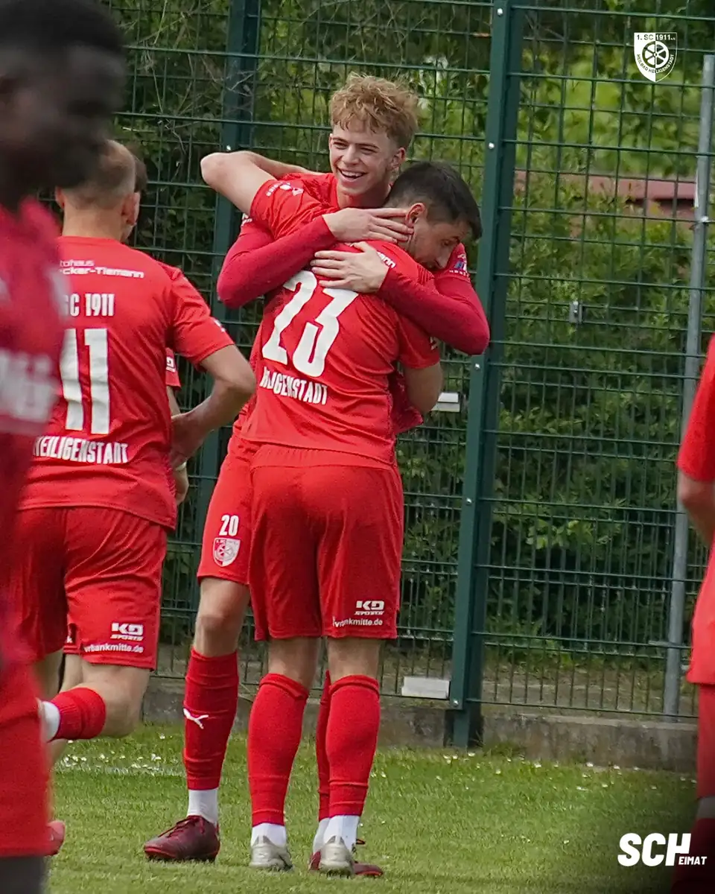
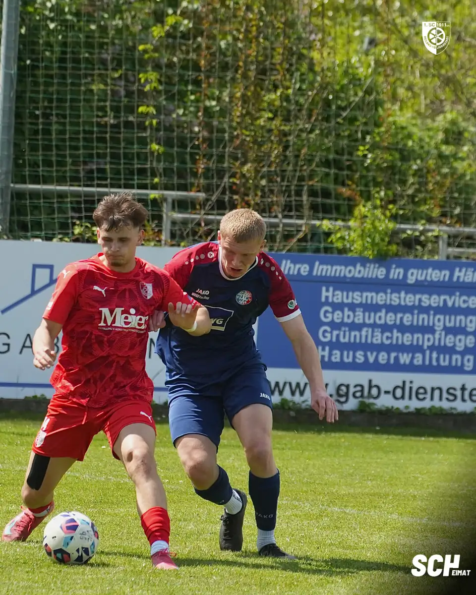
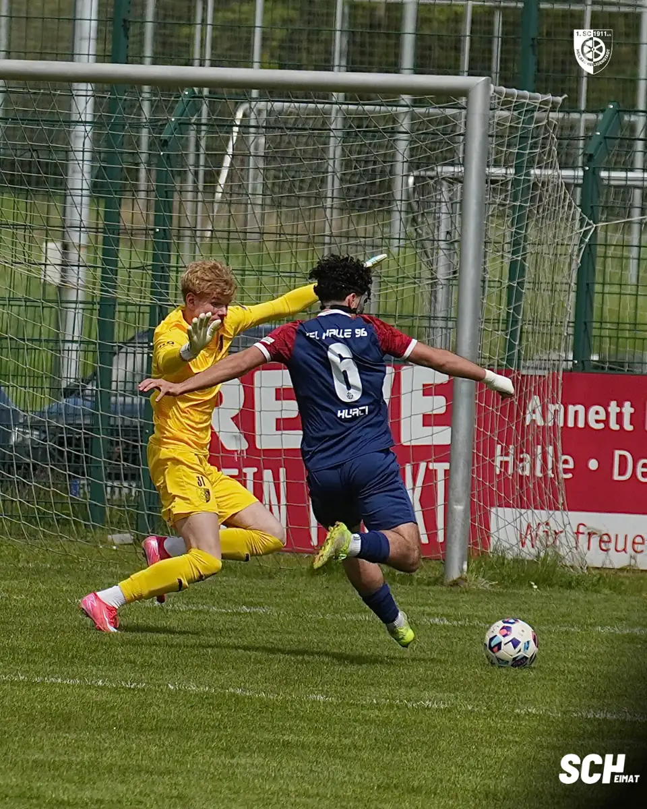
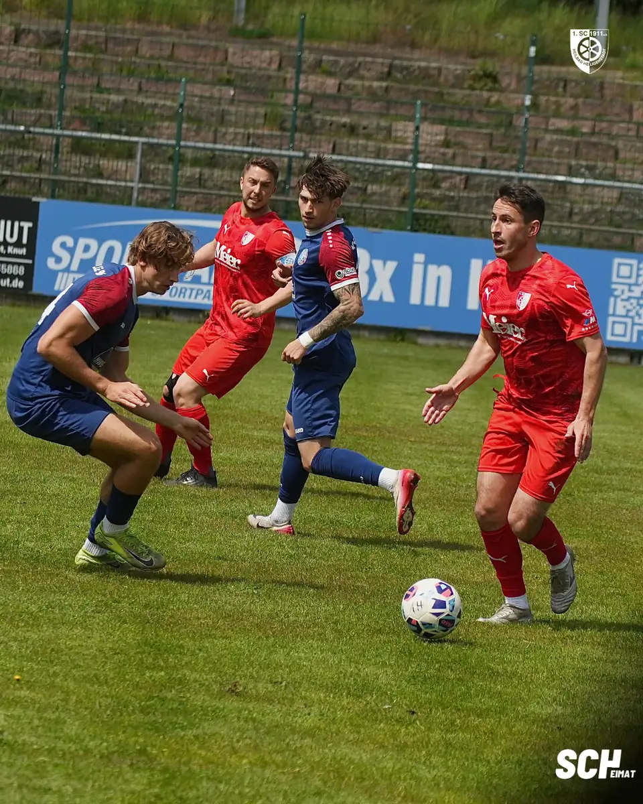

SCH belohnt sich in Halle mit einem Punkt
Das letzte Auswärtsspiel der Oberliga-Saison hätte für unsere Blau-Weißen kaum turbulenter verlaufen können. Beim VfL Halle 1896, dem Tabellensechsten der Liga, zeigte unsere Seipel-Elf noch einmal, was in dieser Mannschaft steckt – und belohnte sich nach großem Kampf mit einem absolut verdienten 2:2-Unentschieden. Dabei begann die Partie aus SCH-Sicht perfekt. Gerade einmal vier Minuten waren gespielt, als sich unsere Jungs früh für einen mutigen Start belohnten. Johann von Breitenbuch stand nach einer Aktion im Strafraum goldrichtig und erzielte aus kurzer Distanz seinen ersten Treffer in der Oberliga – ein besonderer Moment für den jungen Blau-Weißen und die frühe Führung für den SCH. Doch nur kurze Zeit später wurde die ohnehin schwere Aufgabe noch deutlich komplizierter.
Über 70 Minuten in Unterzahl – und trotzdem niemals aufgegeben
In der 16. Minute sah Dioum Abdoul Aziz nach einer Notbremse die Rote Karte. Eine bittere Entscheidung, die bedeutete: Über weite Strecken musste unsere Mannschaft in Unterzahl gegen einen spielstarken Gegner bestehen. Und Halle machte mit einem Mann mehr natürlich Druck. Die Seipel-Elf verteidigte leidenschaftlich, hielt die Ordnung – musste aber nach zwei Standardsituationen den Rückstand hinnehmen. In der 20. Minute fiel zunächst der Ausgleich, ehe die Gastgeber in der 35. Minute die Partie drehten. Wer in diesem Moment dachte, der SCH würde sich seinem Schicksal ergeben, lag komplett daneben. Denn genau das Gegenteil war der Fall.
Eine Mannschaft mit Charakter
Was unsere Blau-Weißen an diesem Nachmittag auf den Platz brachten, war vor allem eines: Charakter. Leidenschaft. Wille. Trotz Unterzahl hielten unsere Jungs dagegen, arbeiteten füreinander, liefen, kämpften und glaubten weiter an ihre Chance. Nach einer starken Trainingswoche war spürbar, dass dieses Team sich im letzten Auswärtsspiel der Saison keinesfalls einfach ergeben wollte. Vor allem nach dem Seitenwechsel zeigte unsere Seipel-Elf ein starkes Gesicht. Mit mutigen Aktionen nach vorne und enormem Einsatz setzte der SCH immer wieder Nadelstiche. Auch Kristian Bako zeigte eine starke Partie und war ein wichtiger Faktor in einem kämpferisch überzeugenden Auftritt.
Tavares belohnt die Moral
In der 72. Minute dann der verdiente Lohn. Nach einer Flanke war Keliano Tavares am langen Pfosten zur Stelle und traf zum 2:2-Ausgleich. Auch für ihn war es der erste Saisontreffer – ein Moment, der sinnbildlich für diesen Nachmittag stand. Zwei Premieren-Tore. Ein Punkt in Unterzahl. Und vor allem eine Mannschaft, die bis zum Schluss alles investierte. Der erste Auswärtssieg der Saison blieb unseren Blau-Weißen zwar verwehrt – doch dieses Unentschieden fühlte sich am Ende trotzdem ein Stück weit wie ein Sieg an. Weil die Moral stimmte. Weil sich niemand hängen ließ. Weil diese Mannschaft noch einmal gezeigt hat, was in ihr steckt.
Ein Punkt, der vielleicht tabellarisch nicht mehr alles verändert – aber sportlich und menschlich ein echtes Ausrufezeichen setzt.
Spieldaten
VfL Halle 1896 – 1. SC 1911 Heiligenstadt 2:2 (2:1)
VfL Halle 1896
Jelonek – Bärwald – Hüttig – Kurti (56. Rayko) – Frühauf (67. Emmerich) – Jagupov – Bölke – Pessel – Marks – Haese – Racine (90.+2 Prokein)
SC Heiligenstadt
Fröhlich – Abdoul Aziz – Lerch – Akhtyrskyi (65. Tavares) – Stashenko – von Breitenbuch (90.+6 Möhlhenrich) – Dornieden – Schnellhardt – Pietsch (65. Ruprecht) – Voilenko – Bako (90.+2 Vogt)
Schiedsrichter
Seidl
Zuschauer
168
Tore
0:1 von Breitenbuch (4.), 1:1 Bärwald (20.) 2:1 Pessel (35.), 2:2 Tavares (72.)



